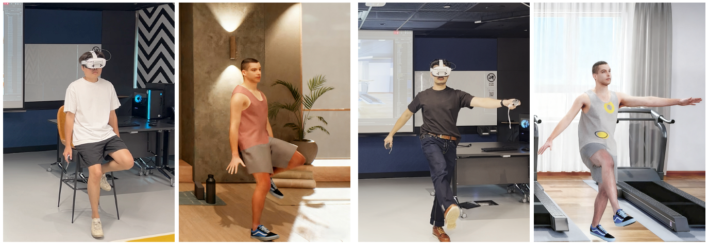
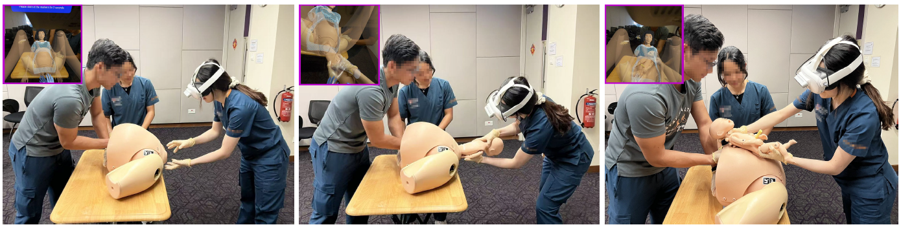
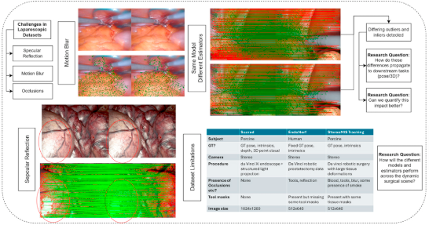
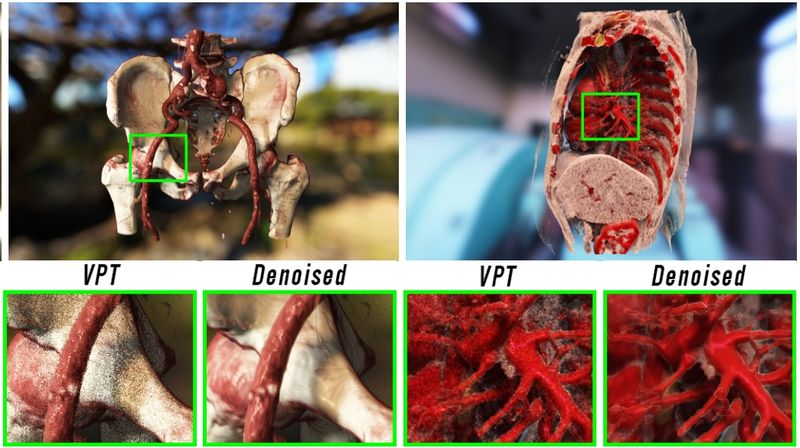

Short Bio
|
I am currently a Research Fellow at the Immersive Reality Lab, College of Design and Engineering (CDE), working in collaboration with the Yong Loo Lin School of Medicine, NUS. Before joining NUS, I obtained my Ph.D. degree in March, 2024 at University of Science and Technology of China (USTC). My research interest mainly focuses on the intersection of computer vision and computer graphics, including but not limited to interactive VR/AR/MR rendering, HDR lighting estimation and panoramic scene understanding. My research goal is to enable photo-realistic content creation automatically for VR/AR/MR applications. Recently, I am also interested in perceptually realistic graphics and VR/AR/MR medical simulation training and education.
|
News
Publications
|

|
EgoPoseVR: Spatiotemporal Multi-Modal Reasoning for Egocentric Full-Body Pose in Virtual Reality
Haojie Cheng, Shaun Jing Heng Ong, Shaoyu Cai, Aiden Tat Yang Koh, Fuxi Ouyang, and Eng Tat Khoo.
IEEE Conference on Virtual Reality and 3D User Interfaces (IEEE VR 2026, TVCG Journal Track)
[Paper] [Project]
|
|

|
A Mixed Reality System for Robust Manikin Localization in Childbirth Training
Haojie Cheng, Chang Liu, Abhiram Kanneganti, Gosavi Arundhati Tushar, Mahesh Choolani, and Eng Tat Khoo.
IEEE Conference on Virtual Reality and 3D User Interfaces (IEEE VR 2026, TVCG Journal Track)
[Paper] [Project]
|
|

|
Evaluating Image Matching with Robust Estimators: Bridging Natural and Surgical Domains to Enhance Scene Understanding
Ying Zhen Tan, Haojie Cheng, Kian Wei Ng, Kee Yuan Ngiam, Yujia Gao, and Eng Tat Khoo.
IEEE Journal of Biomedical and Health Informatics (JBHI)
[ Paper] [Project]
|
|

|
Real-time Realistic Volume Rendering of Consistently High Quality with Dynamic Illumination
Chunxiao Xu, Haojie Cheng, Zhenxin Chen, Jiajun Wang, Yibo Chen and Lingxiao Zhao.
IEEE Transactions on Visualization and Computer Graphics (TVCG)
[ Paper] [Project]
|

|
Realistic Volume Rendering with Environment-Synced Illumination in Mixed Reality
Haojie Cheng, Chunxiao Xu, Xujing Chen, Zhenxin Chen, Jiajun Wang and Lingxiao Zhao.
IEEE International Symposium on Mixed and Augmented Reality Adjunct (ISMAR Adjunct) 2023
[ Paper] [ Project]
|

|
A Mixed Reality Framework for Interactive Realistic Volume Rendering with Dynamic Environment Illumination
Haojie Cheng, Chunxiao Xu, Zhenxin Chen, Jiajun Wang, Yibo Chen and Lingxiao Zhao.
IEEE Conference on Virtual Reality and 3D User Interfaces Abstracts and Workshops (VRW) 2023
[ Paper] [Project]
|

|
Fast and Accurate Illumination Estimation Using LDR Panoramic Images for Realistic Rendering
Haojie Cheng, Chunxiao Xu, Jiajun Wang, Zhenxin Chen and Lingxiao Zhao.
IEEE Transactions on Visualization and Computer Graphics (TVCG)
[ Paper] [ Project]
|

|
Quad-fisheye Image Stitching for Monoscopic Panorama Reconstruction
Haojie Cheng, Chunxiao Xu, Jiajun Wang and Lingxiao Zhao.
Computer Graphics Forum (CGF)
[ Paper] [ Project]
|
Awards
- Outstanding Ph.D. thesis of USTC, China, 2024.
- Outstanding graduate of Anhui Province, China, 2024.
- Outstanding graduate of USTC, China, 2024.
- China National Scholarship, 2023.
- First class scholarship, University of Science and Technology of China, 2023.
- Nanjing Branch Scholarship of Chinese Academy of Sciences, 2023.
- First class scholarship, University of Science and Technology of China, 2022.
- First class scholarship, University of Science and Technology of China, 2021.
- National Second Prize, Chinese Mathematical Contest In Modeling, 2020.
- First class scholarship, University of Science and Technology of China, 2020.
- National First Prize, Chinese Mechanical Innovation and Design Competition, 2017.
|
Miscellaneous
Conference Service
- Program Committee Member for NeuroXR@ISMAR 2025.
- Reviewer for CHI 2026.
- Reviewer for UbiComp/ISWC 2025.
- Reviewer for SIGGRAPH Asia 2024, 2025, 2026.
- Reviewer for MICCAI 2024.
- Reviewer for EuroVis 2024.
- Reviewer for IEEE VR 2024, 2025, 2026.
- Reviewer for ISMAR 2023, 2024, 2025, 2026.
Teaching/Research Mentorship and Presentation Experience
- 2026.01-2026.08 Immersive Intelligence: Transforming Healthcare and Aviation Futures (CDE3301)
- 2025.07 Science Tuesday Talk at the Department of O&G, NUS
- 2025.02 Virtual Reality Workshop at CDE, NUS
- 2024.07-2024.11 Mixed Reality for Obstetrics Training (EG3301R)
- 2022.09-2023.01 Advanced Visualization of Medical Images (BMED6207P)
|
|